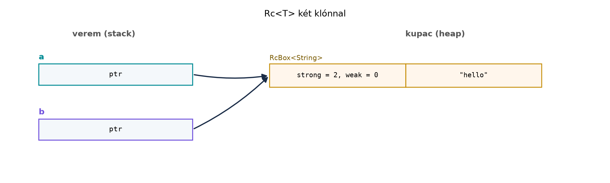

C++-ban a nyers mutatók és a new/delete
korszaka után a smart pointerek lettek az erőforrás-kezelés
alapeszközei: std::unique_ptr a kizárólagos tulajdonláshoz,
std::shared_ptr a megosztotthoz, std::weak_ptr
a ciklusok megtöréséhez. A Rust tulajdonlási rendszere miatt azonban
ezeknek a szerepeknek más a súlya: a Box<T> sokkal
ritkábban kell, mint a unique_ptr, mert a Rust
alapértelmezett mozgatási szemantikája sok esetben kupacallokáció nélkül
is elég; az Rc<T> és Arc<T> pedig
gyakran elkerülhető a kölcsönzéssel. Ebben az alfejezetben megtanulja,
mikor és miért kell okos pointert használni Rustban, és hogyan térnek el
a C++ megfelelőiktől.
Definíció. A Box<T> egy kupacra
allokált T típusú érték egyetlen tulajdonosa. A
Box maga egy veremben tárolt mutató, amely a kupacon lévő
értékre mutat; amikor a Box kikerül a hatókörből, a
Drop implementációja felszabadítja a kupacmemóriát. A
Box nem lehet null, és nem lehet másolni, csak
mozgatni.
Szabály. A Box<T> a
std::unique_ptr<T>-hez hasonlóan kizárólagos
tulajdonlást valósít meg, de a Rust mozgatási szemantikája miatt a
mozgatás implicit – nincs szükség std::move-ra. Rekurzív
típusok (például láncolt lista, fa) esetén a Box szükséges,
mert a Rust nem enged végtelen méretű típusokat: a Node
mezője nem lehet közvetlenül Node, mert a fordító nem tudná
kiszámítani a méretét; a Box<Node> azonban fix
méretű, hiszen csak egy mutatót tartalmaz.
Rekurzív enum lista Box-szal:
enum List<T> {
Nil,
Cons(T, Box<List<T>>),
}
impl<T> List<T> {
fn len(&self) -> usize {
match self {
List::Nil => 0,
List::Cons(_, tail) => 1 + tail.len(),
}
}
}C++-ban a unique_ptr-es láncolt lista hasonló:
#include <memory>
template <typename T>
struct Node {
T value;
std::unique_ptr<Node> next;
Node(T v, std::unique_ptr<Node> n = nullptr)
: value(std::move(v)), next(std::move(n)) {}
};A különbség: Rustban a List::Cons második mezője
Box<List<T>>, azaz a Box jelzi a
kupacfoglalást; nincs nullptr, a végét a Nil
variáns reprezentálja. A unique_ptr mozgatása és a
Box mozgatása is destruktív, de Rustban ez a nyelv
alapértelmezése, nem pedig egy külön művelet.
Definíció. Az Rc<T> (reference
counted) egy egyszálú, nem atomikus referenciaszámlálóval rendelkező
okos pointer. A Rc::clone lemásolja a mutatót, és a belső
számlálót eggyel növeli; a Drop csökkenti, és nulla
számlálónál felszabadítja a kupacblokkot. Az Arc<T>
(atomically reference counted) ugyanezt a modellt valósítja meg atomikus
műveletekkel, ezért biztonságosan használható több szál között, feltéve,
hogy T: Send + Sync.
Szabály. Az Rc<T> és
Arc<T> a C++ std::shared_ptr-ének felel
meg, de Rustban a klónozás explicit: a Rc::clone hívás
világossá teszi, hogy a referenciaszámláló nő. Az Rc nem
biztonságos többszálú környezetben, mert a számlálója nem atomikus; a
fordító ezt a Send és Sync trait hiányával
jelzi. Az Arc atomikus számlálása drágább, ezért csak akkor
használjuk, ha valóban szükséges a szálak közötti megosztás.
Példa Rc-re:
use std::rc::Rc;
let a = Rc::new(String::from("hello"));
let b = Rc::clone(&a);
println!("{} {}", a, b);
println!("strong: {}", Rc::strong_count(&a));Várt kimenet:
hello hello
strong: 2C++ shared_ptr-rel ugyanez:
#include <memory>
#include <string>
#include <iostream>
auto a = std::make_shared<std::string>("hello");
auto b = a; // a számláló nő
std::cout << *a << " " << *b << "\n";
std::cout << "count: " << a.use_count() << "\n";Fontos különbség, hogy a C++ shared_ptr másolása
implicit, a Rust Rc klónozása viszont a
Rc::clone hívással explicit. A
Rc::strong_count a use_count()
Rust-megfelelője.
Definíció. A Weak<T> egy gyenge
referenciát tárol az Rc-ben (vagy Arc-ban)
lévő értékre. Nem növeli az erős számlálót, így nem akadályozza meg az
érték felszabadítását. A Weak nem ad közvetlen hozzáférést
az adathoz; az upgrade() metódus
Option<Rc<T>>-t ad vissza: ha az érték még él,
Some, ha már felszabadult, None.
Szabály. A Weak<T> a C++
std::weak_ptr-nek felel meg, de biztonságosabb használatra
kényszerít: az upgrade() Option-t ad vissza,
így nem lehet érvénytelen pointert dereferálni. Referenciaciklusok
esetén a gyenge mutatóval megtörhetjük a ciklust: a szülő erős
Rc-t tart a gyerekre, a gyerek Weak-t a
szülőre, így az erős számláló nem alkot kört.
Példa egy fa csomópontra, ahol a gyerek Weak-kel mutat a
szülőre:
use std::rc::{Rc, Weak};
#[derive(Debug)]
struct Node {
value: String,
parent: Option<Weak<Node>>,
children: Vec<Rc<Node>>,
}
impl Node {
fn new(value: &str) -> Rc<Node> {
Rc::new(Node {
value: value.to_string(),
parent: None,
children: Vec::new(),
})
}
fn with_parent(value: &str, parent: &Rc<Node>) -> Rc<Node> {
Rc::new(Node {
value: value.to_string(),
parent: Some(Rc::downgrade(parent)),
children: Vec::new(),
})
}
fn parent_value(&self) -> Option<String> {
self.parent
.as_ref()
.and_then(|weak| weak.upgrade())
.map(|p| p.value.clone())
}
}Ebben a kódban a Weak megtöri a szülő–gyerek ciklust: a
szülő Vec<Rc<Node>>-ja erős referenciákat tart,
a gyerek Weak-je nem növeli az erős számlálót. Ha a szülő
Rc-je kikerül a hatókörből, az erős számláló az esetleges
gyerek referenciák ellenére is csökkenhet, mert a gyerekek csak
Weak-et tartanak a szülőre. A parent_value
metódus az upgrade()-et használja, hogy biztonságosan
hozzáférjen a szülőhöz, ha az még él.
A C++ weak_ptr hasonló:
#include <memory>
#include <string>
#include <iostream>
struct Node {
std::string value;
std::weak_ptr<Node> parent;
std::vector<std::shared_ptr<Node>> children;
};
int main() {
auto parent = std::make_shared<Node>();
parent->value = "root";
auto child = std::make_shared<Node>();
child->value = "child";
child->parent = parent;
parent->children.push_back(child);
if (auto p = child->parent.lock()) {
std::cout << p->value << "\n";
}
}A különbség: Rustban az upgrade() Option-t
ad, a lock() pedig shared_ptr-t, amely null
lehet; a weak_ptr dereferálása előtt mindig ellenőrizni
kell a lock() eredményét, a Rust Option
kezelése pedig mintamegyeztetéssel vagy ?-vel kötelező.
Definíció. A Deref trait lehetővé teszi
a * operátor használatát, és a deref coercion
(kényszerítés) automatikusan konvertálja
&Box<T>-t (vagy &Rc<T>-t,
&Arc<T>-t) &T-vé, amikor
metódust hívunk vagy függvényargumentumként adjuk át. A
Box<T>, Rc<T> és
Arc<T> implementálják a Deref-et, így a
belső érték metódusai közvetlenül hívhatók.
Szabály. A deref coercion a Rust fordító
szintaktikus cukra: nem hoz létre új közbenső referenciát, hanem a
típusrendszer szintjén megengedi a konverziót. Ez megkönnyíti az okos
pointerek használatát, mert nem kell explicit * vagy
as_ref() hívás.
Példa:
let b: Box<String> = Box::new(String::from("hello"));
println!("{}", b.len()); // Deref coercion: &Box<String> -> &String, len() a String-enC++-ban az operator* és operator->
explicit hívást igényelne hasonló helyzetben, bár a ->
operátor automatikusan át van terhelve. A Rust deref coercion a
függvényargumentumoknál is működik, például egy
fn len(s: &String) -> usize függvényt meghívhatunk
Box<String>-gel anélkül, hogy explicit
&* b-t írnánk.
Munkakönyvtár: ~/rust-labor/r019/
Hozzon létre egy önálló Cargo-projektet, és írja meg a következő
kódot a src/main.rs fájlba:
cargo new r019
cd r019src/main.rs:
use std::rc::{Rc, Weak};
enum List<T> {
Nil,
Cons(T, Box<List<T>>),
}
impl<T> List<T> {
fn len(&self) -> usize {
match self {
List::Nil => 0,
List::Cons(_, tail) => 1 + tail.len(),
}
}
}
#[derive(Debug)]
struct Node {
value: String,
parent: Option<Weak<Node>>,
children: Vec<Rc<Node>>,
}
impl Node {
fn new(value: &str) -> Rc<Node> {
Rc::new(Node {
value: value.to_string(),
parent: None,
children: Vec::new(),
})
}
fn add_child(parent: &Rc<Node>, child_value: &str) -> Rc<Node> {
// A szülő children vektorát itt még nem tudjuk módosítani, mert a Node
// mezői immutable-ok; ezt a r020 alfejezetben RefCell-lel oldjuk meg.
Rc::new(Node {
value: child_value.to_string(),
parent: Some(Rc::downgrade(parent)),
children: Vec::new(),
})
}
}
fn main() {
let list = List::Cons(1, Box::new(List::Cons(2, Box::new(List::Nil))));
println!("list length: {}", list.len());
let root = Node::new("root");
let child = Node::add_child(&root, "child");
println!("child parent: {:?}", child.parent.as_ref().and_then(|w| w.upgrade()));
let shared = Rc::new(String::from("shared"));
let weak = Rc::downgrade(&shared);
drop(shared);
assert!(weak.upgrade().is_none());
println!("weak after drop: None");
}Fordítás és futtatás:
cargo runVárt kimenet (a Debug formátumot a Weak-re
nem lehet közvetlenül kiírni, ezért a child.parent
kiírásához az upgrade-et használjuk; a pontos kimenet a
Debug implementációtól függ, ellenőrzési igény: a
Weak Debug-ja a Rust verziójától függ):
list length: 2
child parent: Some(Node { value: "root", parent: None, children: [] })
weak after drop: NoneA laborban a List rekurzív enum a Box
használatát, a Node a Weak-et, a
Rc pedig a megosztott tulajdonlást mutatja be. A
Node::add_child metódus jelenleg nem módosítja a szülő
children vektorát, mert a Node mezői
változtathatatlanok; ezt a hiányosságot a Belső
mutabilitás: Cell, RefCell alfejezetben pótoljuk, ahol a
RefCell-t bevonva a fa teljesen felépíthető lesz.
Az ábra a memóriaelrendezést mutatja két Rc klónnal:

A Rc a kupacon egy belső RcBox struktúrát
hoz létre, amely tartalmazza a számlálókat (erős és gyenge) és az
értéket. A veremben lévő a és b csak egy-egy
mutatót tárol, mindkettő ugyanarra a kupacblokkra mutat. A gyenge
számláló akkor nő, amikor Weak-et hozunk létre; az erős
számláló nulla elérésekor az érték felszabadul, a gyenge számláló nulla
elérésekor pedig a RcBox is megszűnik.
Rc::clone szórása az egész kódban gyakran rossz válasz a
kölcsönzési hibákra. Ha egy értéket csak olvasni akarunk egy másik
hatókörben, a &T referenciával egyszerűbb és
hatékonyabb. Példa rossz kód:use std::rc::Rc;
fn len(s: Rc<String>) -> usize {
s.len()
}
fn main() {
let s = Rc::new(String::from("hello"));
// Ez lefordul, de feleslegesen növeli a számlálót.
println!("{}", len(Rc::clone(&s)));
}Javítás: fn len(s: &str) -> usize és
len(&s).
Rc küldése szálakba. Az
Rc nem implementálja a Send traitet, ezért
fordítási hibát kapunk, ha egy szálba próbáljuk mozgatni. Helyette
Arc-ot kell használni:use std::rc::Rc;
fn main() {
let s = Rc::new(String::from("hello"));
// Ez a sor szándékosan nem fordul:
// let handle = std::thread::spawn(move || println!("{}", s));
}A hiba lényege: Rc<String> nem Send,
mert a referenciaszámláló nem atomikus. A javítás az Arc
használata.
Weak::upgrade() eredményének
unwrap-elése. Ha az utolsó Rc már
eldobásra került, az upgrade() None-t ad, és
az unwrap panikol. Használjon match-et,
if let-et vagy a ? operátort.
Felesleges egymásba ágyazott okos pointerek. Az
Arc<Rc<T>> vagy
Rc<Arc<T>> szinte soha nem indokolt; válasszon
egyet, és a többi réteget kölcsönzéssel oldja meg.
Rc-t küldünk egy szálba. Mi lesz a fordítási hiba lényege,
és hogyan javítható?use std::rc::Rc;
use std::thread;
fn main() {
let s = Rc::new(String::from("hello"));
let handle = thread::spawn(move || println!("{}", s));
let _ = handle.join();
}unique_ptr-rel definiálja.
Írja át Rustra Box vagy Option használatával,
és adja meg a rekurzív height metódust.#include <algorithm>
#include <memory>
struct Node {
int value;
std::unique_ptr<Node> left;
std::unique_ptr<Node> right;
int height() const {
int lh = left ? left->height() : 0;
int rh = right ? right->height() : 0;
return 1 + std::max(lh, rh);
}
};Implementációs feladat. Készítsen egy
Tree típust, amelyben a szülő Rc<Tree>-t
tart a gyerekekről, a gyerek pedig Weak<Tree>-t a
szülőről. A fa csomópontjai tartalmazzanak egy String
értéket. Írjon egy
parent_value(&self) -> Option<String>
metódust, amely visszaadja a szülő értékét, ha a szülő még él. (A fa
módosításához a Belső mutabilitás: Cell, RefCell
alfejezetben hozzáadjuk majd a RefCell-t; most elegendő, ha
a metódus Weak::upgrade-et használ.)
Hibajavítás. Az alábbi kód egyszálú kontextusban
Arc-ot használ, és unwrap-eli az
upgrade eredményét. Refaktorálja idiomatikus
Rc és Option-kezeléssé.
use std::sync::{Arc, Weak};
fn main() {
let a = Arc::new(String::from("hello"));
let w: Weak<String> = Arc::downgrade(&a);
drop(a);
// Ez panikol, ha a gyenge mutató nem érvényes.
let s = w.upgrade().unwrap();
println!("{}", s);
}Válasz: Nem fordul. Az Rc<String>
nem implementálja a Send traitet, mert a
referenciaszámlálója nem atomikus, ezért nem biztonságos egy másik
szálba mozgatni. A hiba lényege: Rc<String> nem
Send. Javítás Arc-ra cserélve:
use std::sync::Arc;
use std::thread;
fn main() {
let s = Arc::new(String::from("hello"));
let handle = thread::spawn(move || println!("{}", s));
let _ = handle.join();
}A Rust-megfelelő Box-szal és
Option-nal:
#[derive(Debug)]
struct Node {
value: i32,
left: Option<Box<Node>>,
right: Option<Box<Node>>,
}
impl Node {
fn new(value: i32) -> Box<Node> {
Box::new(Node {
value,
left: None,
right: None,
})
}
fn height(&self) -> usize {
let lh = self.left.as_ref().map(|n| n.height()).unwrap_or(0);
let rh = self.right.as_ref().map(|n| n.height()).unwrap_or(0);
1 + lh.max(rh)
}
}A különbség: a C++ unique_ptr-rel a left és
right közvetlenül a Node-ban van, és a null
értékeket a unique_ptr null típusával jelzi; Rustban az
Option<Box<Node>> kombináció expliciten kezeli
a hiányzó gyereket. A height metódusban a
Box-ra a deref coercion automatikusan alkalmazza a
Node metódusait.
A fa felépítéséhez a szülő children vektorát módosítani
kellene, ami jelenleg nem lehetséges a RefCell nélkül. A
feladat a parent_value metódus megvalósítására fókuszál; a
Weak mechanizmus bemutatásához elegendő, ha a
parent mezőt a konstrukció során állítjuk be:
use std::rc::{Rc, Weak};
struct Tree {
value: String,
parent: Option<Weak<Tree>>,
children: Vec<Rc<Tree>>,
}
impl Tree {
fn new(value: &str) -> Rc<Tree> {
Rc::new(Tree {
value: value.to_string(),
parent: None,
children: Vec::new(),
})
}
fn set_parent(&mut self, parent: &Rc<Tree>) {
self.parent = Some(Rc::downgrade(parent));
}
fn parent_value(&self) -> Option<String> {
self.parent
.as_ref()
.and_then(|weak| weak.upgrade())
.map(|p| p.value.clone())
}
}
fn main() {
let root = Tree::new("root");
let child = Tree::new("child");
// Itt a gyerek parent mezőjét közvetlenül módosítjuk egy &mut-tal,
// de a Tree children vektorához való hozzáadás még mindig RefCell-t igényel.
// A példa egyszerűsített: a parent_value metódus logikáját mutatja.
let mut child_mut = Rc::make_mut(&mut Rc::clone(&child)); // ez a sor hibás koncepcionálisan
}Ez a megoldás nem jó, mert a Rc make_mut-ja
nem így működik. Helyesebb a RefCell használatát a Belső mutabilitás: Cell, RefCell és a futásidejű
kölcsönzés alfejezetre hagyni, és itt egy egyszerűbb demonstrációt
adni, amely a Weak-et közvetlenül mutatja:
use std::rc::{Rc, Weak};
fn main() {
let root = Rc::new(String::from("root"));
let weak: Weak<String> = Rc::downgrade(&root);
// A root még él, az upgrade Some-ot ad.
if let Some(rc) = weak.upgrade() {
println!("parent value: {}", rc);
}
drop(root);
// A root már felszabadult, az upgrade None-t ad.
assert!(weak.upgrade().is_none());
}A tényleges fa megvalósítás a RefCell-lel a következő
alfejezet feladata; itt a Weak upgrade
mechanizmus a lényeg.
Javított változat:
use std::rc::{Rc, Weak};
fn main() {
let a = Rc::new(String::from("hello"));
let w: Weak<String> = Rc::downgrade(&a);
drop(a);
match w.upgrade() {
Some(s) => println!("{}", s),
None => println!("már nincs"),
}
}Az Arc-ról Rc-re váltottunk, mert egyszálú
környezetben nincs szükség atomikus számlálásra; az unwrap
helyett match-et használunk, hogy kezeljük a
None esetet.
A Box<T> a C++ unique_ptr
Rust-megfelelője: kupacra allokált, kizárólagos tulajdon, rekurzív
típusokhoz nélkülözhetetlen. Az Rc<T> a
shared_ptr egyszálú, nem atomikus változata, az
Arc<T> pedig az atomikus, szálak között is
biztonságos. Mindkettő explicit clone-t igényel a számláló
növeléséhez. A Weak<T> a weak_ptr
Rust-megfelelője; az upgrade() Option-t ad, és
megtöri a szülő–gyerek referenciaciklust. A Deref és a
deref coercion lehetővé teszi, hogy a Box, Rc
és Arc a belső érték metódusait közvetlenül meghívja. A
laborban a List<T> rekurzív enumot és a
Weak mechanizmust gyakoroltuk a
~/rust-labor/r019/ projektben. Továbbvitt
eredmény. A Rc és a Deref a Belső mutabilitás: Cell, RefCell alfejezetben az
Rc<RefCell<T>> minta alapját képezi; az
Arc a Szálak, Send és Sync
alfejezetben a szálak közötti megosztásnál tér vissza; a
Deref a Trait objektumok és dinamikus
diszpécs alfejezetben a Box<dyn Trait> és
Rc<dyn Trait> használatakor válik
kulcsfontosságúvá.
A fejezet a std::boxed::Box, std::rc::Rc,
std::sync::Arc és std::rc::Weak stabil
API-jára épül. A pontos Debug formátum a
Weak-re és az upgrade viselkedése a Rust
verziófüggő lehet; a kiindulópontok a hivatalos dokumentáció
(doc.rust-lang.org/std/), de az API-kat a docs.rs-en
ellenőrizni kell a konkrét toolchain-verzióhoz. Az alfejezetben nincs
külső crate-függőség, így verzióellenőrzés nem szükséges.